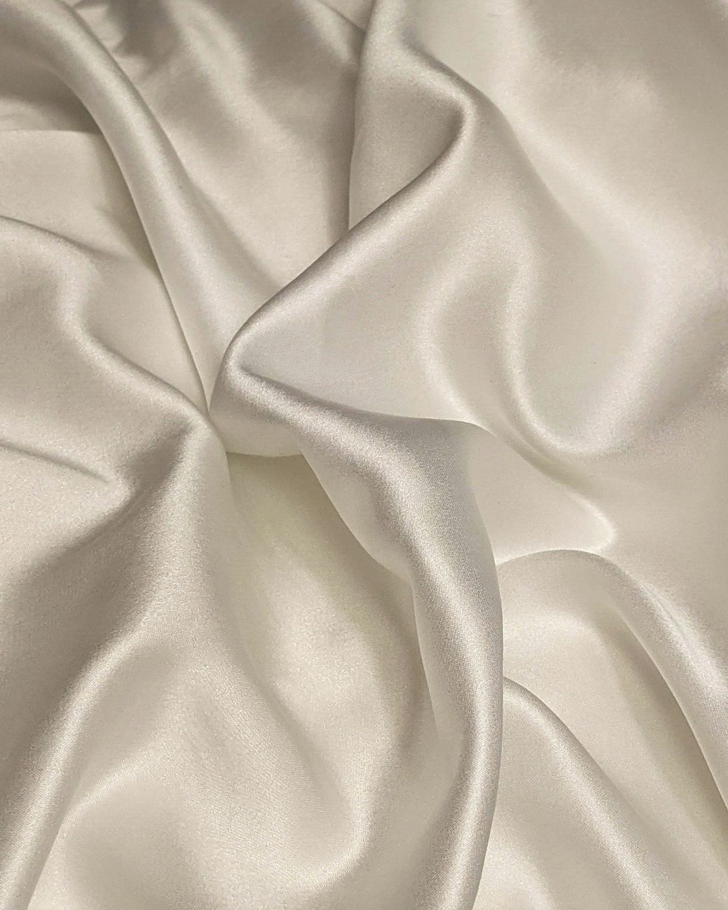
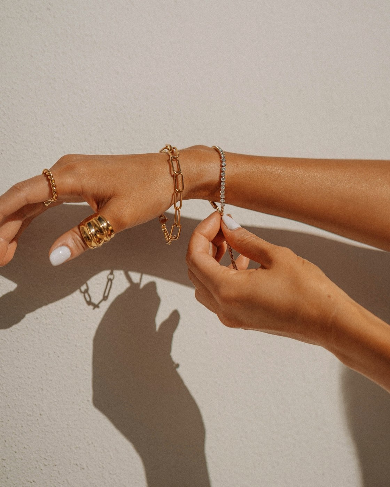

The journal
Wardrobe notes, jewelry guides and honest advice on buying luxury well.

The Parisian Winter Capsule: Ten Pieces, Endless Outfits
A small wardrobe that does a lot of work, built the way Parisian women actually dress.

Everyday Gold: How to Wear Fine Jewelry With Knitwear and Denim
Fine jewelry is not only for evenings. The Parisian way is to wear a few good pieces every single day.

Buying a Pre-Owned Cartier Watch: What to Check Before You Pay
A pre-owned watch can be a smart way into fine watchmaking. Here is how to buy one with confidence.
Brands · 5 minSandro or IRO? Two Takes on Parisian Chic
Both are Parisian, both are loved, but they dress very different women. Here is how to tell which one is yours.

What Quiet Luxury Really Means (and What It Does Not)
The term is everywhere. Underneath the trend is a simple, lasting idea about how to dress.

Cost Per Wear: How to Think About Investment Pieces
A simple calculation that changes how you shop, and why the expensive coat can be the economical choice.
What to Pack for Paris: Four Looks for the Weekend
A day of walking, a long lunch, dinner out and the afternoon it rains. Four winter outfits for a weekend in Paris, piece by piece.

Three Travel Outfits for a Weekend in Paris
The case, the bag and what to wear on the way. Three ways to arrive in Paris looking as if you live there.

French Lingerie: The Quiet Art of Dressing Underneath
Silk, fine lace and the right fit. Why French women treat lingerie as the first layer of a good outfit.

The Three Boots Every Parisian Wardrobe Needs
A flat ankle boot, a knee-high riding boot and one with a heel. Together they cover every autumn and winter day.

The Case for a Small Watch
Big dials had their decade. A small, slim watch is quieter, easier to wear and closer to how Parisian women have always worn time.

One Good Piece: Buying Gold Jewelry When Gold Is Expensive
Gold has rarely cost more. That is a reason to buy less and choose better, whether the piece is a gift or for yourself.